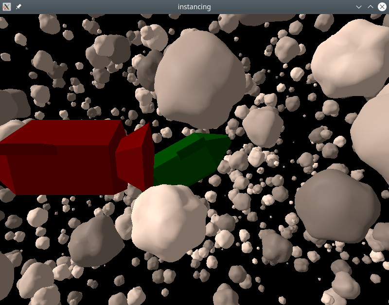

Qt Quick 3D - Instanced Rendering Example
Demonstrates how to do instanced rendering in Qt Quick 3D.

This example shows how do instanced rendering using the basic QML API.
The spaceship and asteroid models were created using the Blender 3D modeling tool, and imported with balsam.
Random instancing
We use RandomInstancing to make a random table that defines our asteroid field:
RandomInstancing { id: randomInstancing instanceCount: 1500 position: InstanceRange { from: Qt.vector3d(-300, -200, -500) to: Qt.vector3d(300, 200, 200) } scale: InstanceRange { from: Qt.vector3d(1, 1, 1) to: Qt.vector3d(10, 10, 10) proportional: true } rotation: InstanceRange { from: Qt.vector3d(0, 0, 0) to: Qt.vector3d(360, 360, 360) } color: InstanceRange { from: "grey" to: "white" proportional: true } randomSeed: 2021 }
Position and rotation are allowed to vary freely. Scaling is set to be uniform in all directions and colors are grayscale. This is done by setting the proportional attribute.
The spaceships are placed manually using InstanceList:
InstanceListEntry { id: redShip position: Qt.vector3d(50, 10, 100) eulerRotation: Qt.vector3d(0, 180, 0) color: "red" NumberAnimation on position.x { from: 50 to: -70 duration: 8000 } } InstanceListEntry { id: greenShip position: Qt.vector3d(0, 0, -60) eulerRotation: Qt.vector3d(-10, 0, 30) color: "green" } InstanceListEntry { id: blueShip position: Qt.vector3d(-100, -100, 0) color: "blue" } InstanceList { id: manualInstancing instances: [ redShip, greenShip, blueShip ] }
The properties of InstanceListEntry are bindable: here we animate the red ship so it crosses the path of the camera.
Finally we apply the instancing tables to the objects:
Asteroid { instancing: randomInstancing NumberAnimation on eulerRotation.x { from: 0 to: 360 duration: 11000 loops: Animation.Infinite } } SimpleSpaceship { instancing: manualInstancing }
By animating the rotation of the asteroid model, all of the instances will rotate without having to change the contents of the instance table. Since the asteroid instances have random rotations, all the asteroids will rotate around different axes.
Files:
- instancing/Asteroid.qml
- instancing/CMakeLists.txt
- instancing/Example/Asteroid.qml
- instancing/Example/SimpleSpaceship.qml
- instancing/Example/instancing_qml_module_dir_map.qrc
- instancing/Example/main.qml
- instancing/Example/qmldir
- instancing/SimpleSpaceship.qml
- instancing/instancing.pro
- instancing/main.cpp
- instancing/main.qml
- instancing/qml.qrc